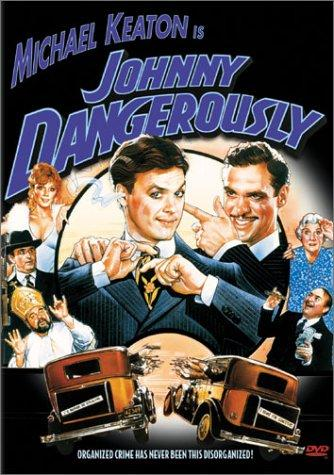

"You gotta watch that left hook, Ma."Johnny Dangerously
Johnny Dangerously is my favorite comedy. It has amazing intellectual jokes followed by hysterical lapstick routines. The story follows Johnny as a poor kid living in New York who accidentally becomes a well respected criminal and night club owner. He must avoid the attention of his little brother and prosecuter. It's a barrel of laughs, please watch it.
Johnny Kelly is a good-hearted, honest man forced into a life of crime to pay for his neurotic, ailing mother’s massive medical bills.To afford these expenses and fund his younger brother Tommy’s law school education, Johnny begins working for local gangster Jocko Dundee, adopting the persona "Johnny Dangerously". Johnny discovers he has a knack for the business, quickly rising in the ranks while keeping his true profession hidden from his mother and brother, who believe he is a legitimate nightclub owner.
Johnny faces off against ruthless rival Danny Vermin, who frequently causes trouble and tries to frame Johnny. Tommy graduates and becomes a District Attorney, unaware that his career is funded by mob money. Vermin and corrupt D.A. Burr conspire to kill Tommy by sabotaging his car, causing a severe accident. In retaliation for the attempt on his brother's life, Johnny has Burr killed. Vermin discovers that the new, strict District Attorney (Tommy) is the brother of the notorious gangster (Johnny), leading to Johnny being framed for murder.
Johnny is found guilty, sentenced to the electric chair, and sent to death row, where he receives "rock star" treatment from a starstruck warden. Realizing Vermin still intends to kill Tommy, Johnny plots his escape, assembling a tommy gun from parts handed to him by inmates while on his way to the electric chair. Johnny escapes in a laundry truck driven by Lil, racing to the Savoy Theatre to save Tommy. Johnny shoots and wounds Vermin, saving his brother. The governor pardons Johnny, Vermin is arrested, and Johnny retires from a life of crime.
"You shouldn't hang me on a hook, Johnny. My father hung me on a hook once. Once."Johnny Dangerously